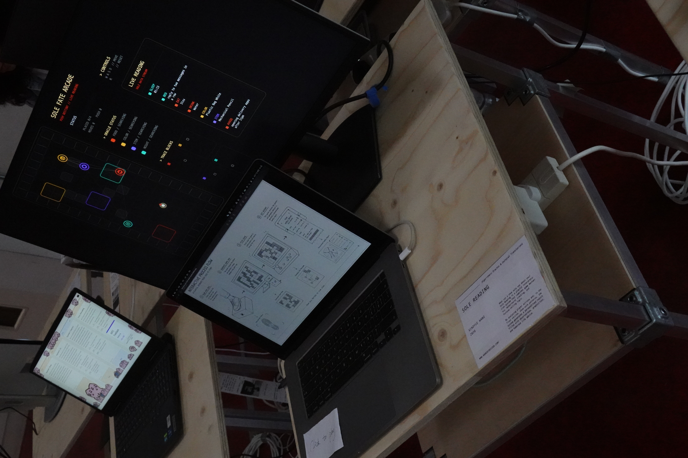

Sole Reading
Sole Reading is an interactive game that transforms player behaviour into a playful personal report. Inspired by palm reading, fortune-telling systems, and behavioural analysis, the project records movement, choices, and spatial relationships during gameplay. The final work will combine shoe-sole scanning and game interaction to generate personalised observations, predictions, and everyday advice.
Xiaoyue Wang
My work explores the intersection of game design, interactive media, and cultural narratives through computational and participatory practices.